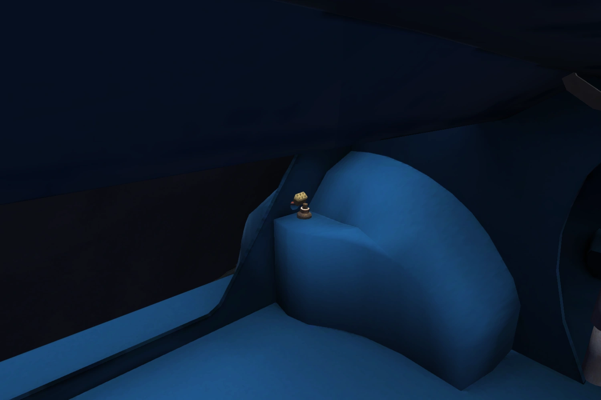
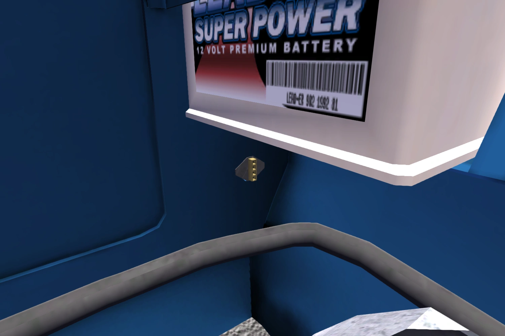
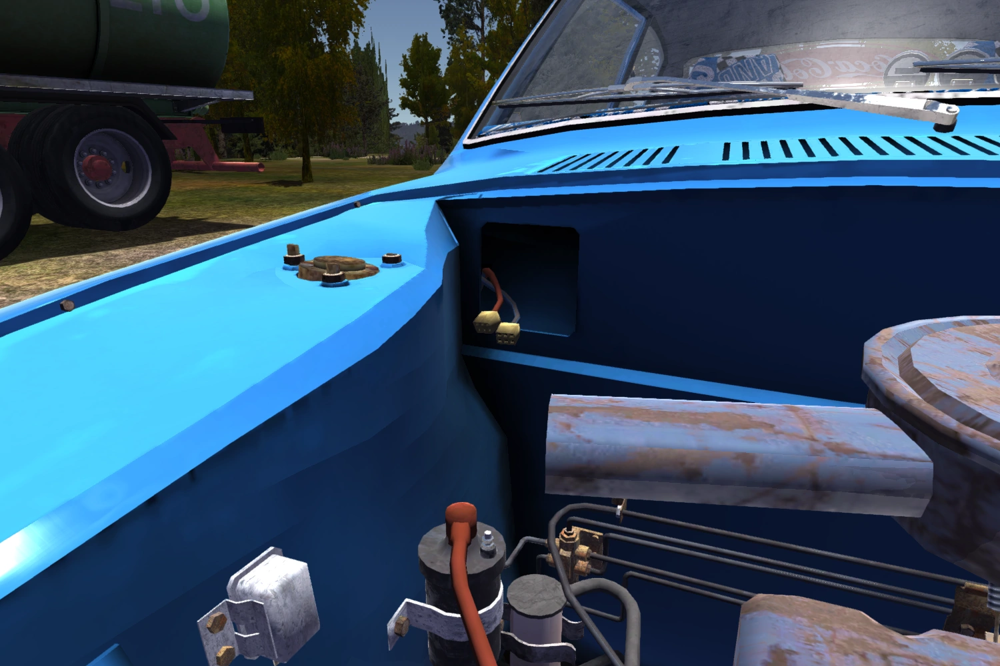
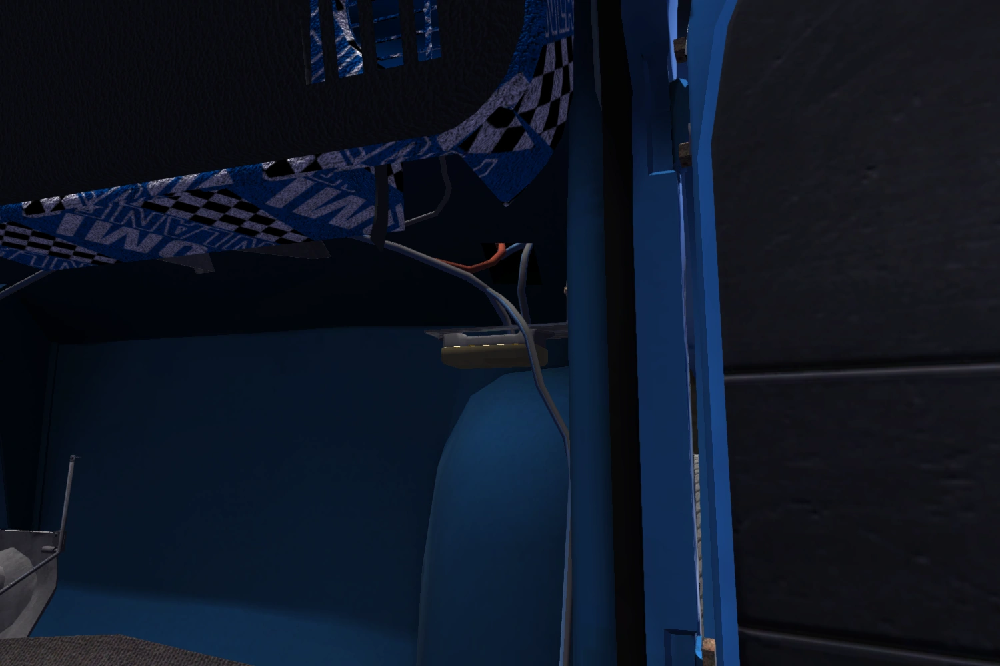
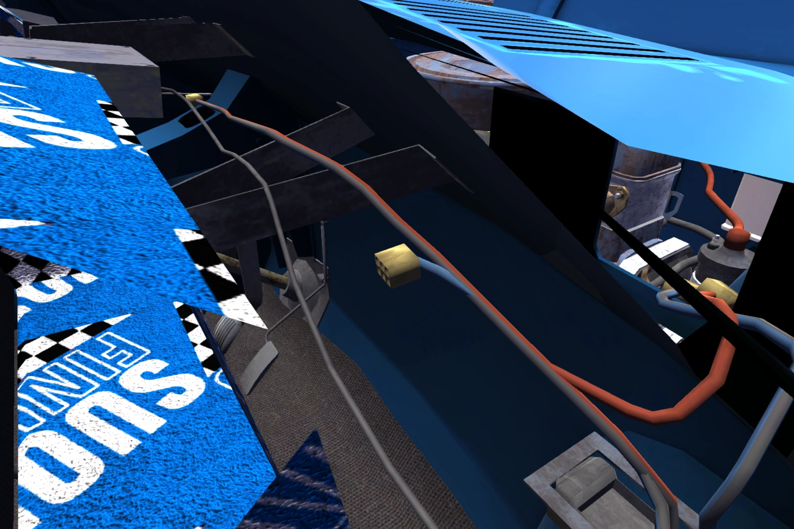
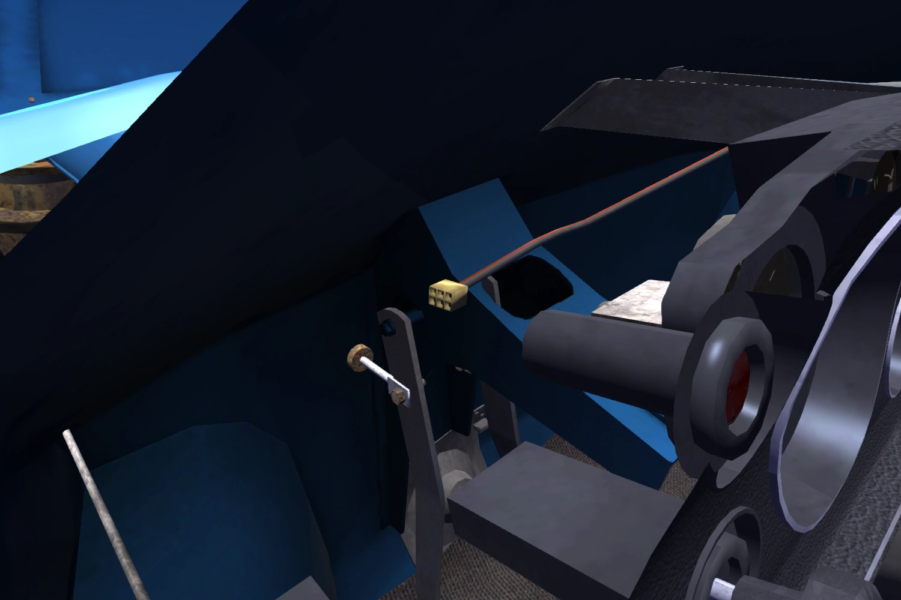
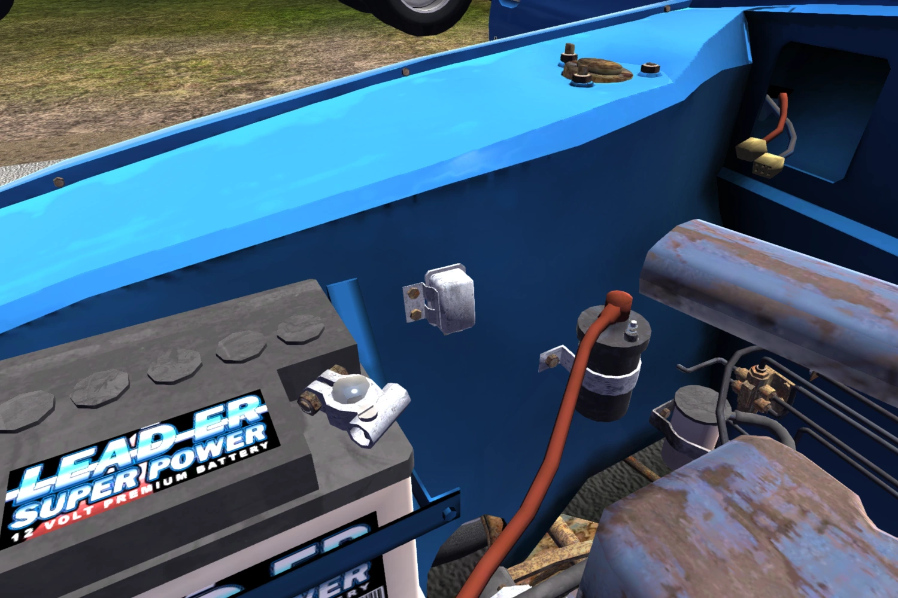

Starting anew can be difficult at first, because of a severe food and money shortage. Luckily, constructing the car is pretty simple if you have a guide.
Making Sure You're Not Wasting Time
First of all, head into the garage (open doors with right-click and left-click), grab the driver's seat, carry it over to the car, and shake it around inside until a check mark pops up. Left-click to mount the seat. Then, take the spanner set from the garage and open it (F). Once it's open, enter Tool Mode (2) and pick up the 9mm spanner. Rotate the scroll wheel upwards on all four screws (not all of them are visible, think of where they would be) and make sure to tighten them completely.
Why do this? Your uncle, who owns a van and a septic tanker, won't show up unless your seat is fitted, your suspension is assembled, or your engine is mounted. Of course, fitting the seat is the easiest task of the three. Now, your uncle should show up if you wait a few days, meanwhile, it's time to visit the closest town to buy what you need to finish the car. You need Uncle to spawn so you can borrow the van and later, the septic tanker. The van is great for carrying shopping and upgrades, and the septic tanker is one of your main sources of income.
I recommend doing some jobs before starting to build the car, such as chopping wood and waiting for the delivery request. The extra money helps a lot.
Gone Shopping
Before leaving, go to the parts catalog in the garage and buy the cheapest set of rims. Take the envelope with you. Head over to the boat that's at the dock, taking the beer case and the gas can (green) with you (and the sausages if you're hungry). Once in the boat, start it by pulling the motor pull cord until you hear the engine running. Switch into the first gear and head towards the small island in the middle of the lake. There, pick up the bucket (with its lid) and get back in the boat. Keep going in the direction you were originally headed (you should also be able to see a church tower now, go towards that). Congratulations, you are now in Peräjärvi! Find the store and buy the following:
Some sausages
One coolant bottle
One motor oil bottle
Three clutch/brake fluid bottles (at least)
One fan belt
Some mosquito spray
Sparkplug box
New battery
New oil filter
Fill up the gas can
Don't forget to leave the envelope in the mailbox when heading back! Also, this will be tedious, as you'll have to make 4 round trips to bring everything to the boat.
Engine and Chassis
Once home, start by finding the engine block in the garage and placing it somewhere accessible, such as the garage floor or table.
Then, attach the following parts (if something is marked !, then there is an exception, check the exceptions list at the bottom before tightening the marked part):
Crankshaft to block
3 main bearings (2x7 each)
4 pistons (2x7 each)
Head gasket to block
Cylinder head (10x7)
Sparkplugs (sparkplug wrench)
Rocker shaft (5x8)
Camshaft gear (!)(1x10)
Timing chain
Timing cover (6x6)
Water pump (5x7)
Crankshaft pulley (1x11)
Water pump pulley (4x7)
Distributor (screwdriver)
Alternator (!)(1x7, 1x10, screwdriver)
Fan belt
Engine plate
Starter (2x7)
Carburator (4x8)
Headers (5x8)
Flywheel (6x7)
Assemble the three clutch parts (clutch disc, clutch pressure plate, clutch cover plate) (join them together)
Clutch assembly (6x6)
Oilpan (8x7, 1x13)
Inspection cover (!)(4x7)
Gearbox (!)(6x7, 1x10 below headers)
Drive gear (7x6)
Engine to motor hoist (2x10)
Rocker cover (6x7)
Fuel pump (2x7)
Air filter (2x6)
Oil filter (scroll)
Congratulations! Your engine is now complete, but your job is not complete yet. You still have to assemble the chassis.
Now you have to get creative and find a way to push the car inside the garage so you can work underneath it.
Sub frame (4x10)
Steering rack (4x9)
Steering column (2x8)
2 wishbones (2x10 each)
2 spindles (1x12 each)
2 steering rods (!)(1x12 each)
2 disc brakes (!)(1x14 each)
2 halfshafts (3x9 each)
2 struts (!)(4x9 each, 3x10 each, 1x12 each)
Adjust the steering rods by fully untightening the bolt (up to 120 ticks!) and then retighening the bolt exactly 60 ticks
2 trail arms (2x12 each)
2 coil springs
2 drum brakes (1x14 each)
Wheels (4x13)
Mount the engine by lowering it into the engine bay (3x11)
This is the exception list for bolts.
Camshaft gear must be aligned with the crankshaft (there is a small notch/arrow on the camshaft gear that should be pointed towards the crankshaft)
Place alternator belt on alternator before tightening alternator. Tighten 7mm and 10mm bolt, then scroll the mousewheel on the alternator until it is touching the belt, then tighten the screw.
Gearbox shares all 7mm bolts with inspection cover, install both before tightening
Steering rods share their 12mm bolt with struts, install both before tightening
Disk brakes share their 14mm bolt with halfshafts, install both before tightening
Now, your engine is fitted, but you're still not done. These are the last components you need to assemble (then comes tuning).
4 hubcaps
Battery
Electrics (2x8)
Fuel strainer (1x8)
Radiator (4x7)
3 radiator hoses
Clutch master cylinder (1x9, 2x8)
Brake master cylinder (1x9, 2x8)
Clutch lining (2x7)
Brake lining (11x7)
Steering wheel (1x10)
Fuel tank (7x11, 1x12)
Gear stick (3x6)
Gear linkage (3x5)
Dashboard (2x10, one in glovebox)
RPM/clock gauge to dashboard meters (2x7)
Dashboard meters (2x6, both in glovebox)
Radio
2 headlights (2x7 each)
Grille (2x6)
2 bumpers (2x8)
Rear seat (2x9)
2 front seats (4x9 each)
Handbrake (1x5, 4x8, 8mm bolts must be bolted before the 5mm one)
Exhaust pipe (3x7)
Exhaust muffler (1x7)
2 doors (4x10 each)
2 fenders (5x5 each)
Fuel tank pipe (goes in the hole in the rear right of the car body)
Bootlid (4x6)
2 rear lights
Back/subwoofer panel
Hood (4x6)
Wiring (guide below)
Great job, your car now looks functional. You still need to wire it though, this is arguably the hardest aspect. (If you need help finding the connectors, you can mouse over their name to see a photograph.)
Rear harness connector to fuel tank
RHC to left rear light
RHC to right rear light

Headlights connector to left headlight(must be detached first)
HC to right headlight
HC to left marker light (if you have those installed)
HC to right marker light
HC to Main harness connector

MHC to Regulator
MHC to Positive battery terminal
MHC to Ignition coil
MHC to Radiator fan connector

Fusebox to Instrument panel 1 (near dash meters, fuel/temp gauges)
FB to Ignition switch
FB to Instrument panel 2 (near hazard switch)

Radio harness to amplifier power (if amp is installed)
RH to Radio/CD player

Dash harness connector to Light switch (near wiper switch)
DHC to AFR gauge (if installed)
DHC to Extra gauges (if installed)

Positive terminal to Starter (bolted with 1x5)
Negative terminal to Battery ground connector (Starter front 7mm bolt must be untightened)
Regulator to Alternator

Amp audio to Radio/CD player (if installed)
Audio out left to Subwoofer left (if installed)
Audio out right to Subwoofer right (if installed)
Done! Those lists were long, weren't they? Now, fill up the car's fluids (gas into... you know where gas goes, oil into rocker cover, coolant into radiator, clutch/brake fluid into the three caps on the engine bay's corner), pull back the engine choke (inside the car), hold the ignition switch down, and, once it starts, rev the car a little and push the choke back in. If it doesn't stop abruptly, congratulations! You have a functional car!
Wrapping Up
Now that your car works, it's time to drive to the inspection shop in order to get your car inspected. You can either take the normal highway route into town and risk getting stopped at a police checkpoint, or take the longer dirt road.
Whichever route you take, once you're in town, park your car on the lift inside the inspection shop and pay poor Lindell to use his magic screwdriver to check your car. If you followed these steps, you should now have in front of you two new beautiful license plates, which you should now fit onto your bumpers.